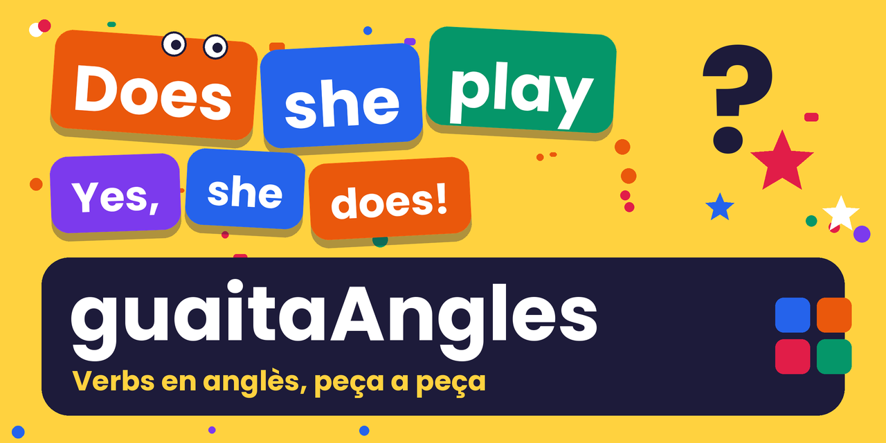

Positive, negative, question i short answer, amb peces de colors, regles per recordar i exercicis de verbs regulars i irregulars. Pensada per a l'iPad.

Cada color és una part de la frase. En passar a pregunta, l'auxiliar salta al davant.
Onze temps verbals en tres nivells: activa només els que ja treballeu.
Totes les persones i les quatre formes de qualsevol verb.
Per patrons, amb fonètica i avisos de pronunciació.
Rondes de 10 preguntes amb la regla després de cada resposta.
Escolta les frases i mantén premut CA per veure-les en català.
Obre l'app amb Safari, toca Comparteix i Afegeix a la pantalla d'inici. Funciona sense connexió i no envia cap dada: tot es queda al teu dispositiu.